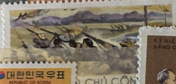
| SOURCE | TITLE| IMAGE MATCH | click to source page |
| Amazon.com | Amazon.com: 1985 U.S. 22c Stamp Korean War Veterans Issue, Scott#2152 : Toys & Games | 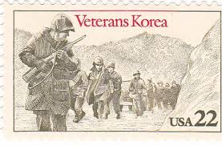 |
| eBay | Scott #2152...22 Cent....Veterans Korea..... Plate Block | eBay | 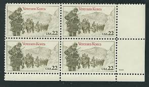 |
| borinqueneers.com | Korean War Stamp - The Borinqueneers | 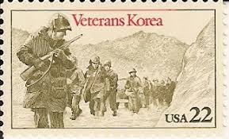 |
| WorthPoint | 65th INFANTRY REGIMENT US ARMY PUERTO RICO CREST DUI | #75840763 | 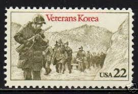 |
| eBay | Military, War Unused US Stamps (1941 22 Cent Denomination-Now) for sale | eBay | 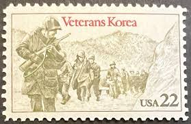 |
| Alamy | USA - CIRCA 1985: a stamp printed in the USA shows American Troops in Korea, Korean War Veterans, circa 1985 Stock Photo - Alamy | 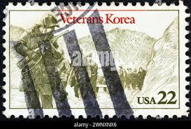 |
| eBay | FRAMED UNUSED U.S. POSTAGE STAMP FROM 1985 HONORING KOREAN WAR SOLDIERS | eBay | 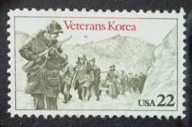 |
| eBay | Military, War 1981-1990 Year of Issue Unused US Stamps (1941-Now) for sale | eBay | 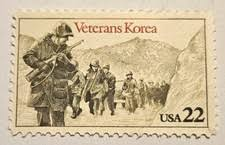 |
| eBay | KBJ Stamps and Collectibles | eBay Stores | 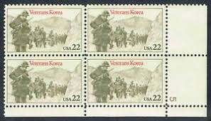 |
| American Minute | Korean War "Freedom is Not Free": Democracy & Individual Capitalism ve – AmericanMinute.com-William J. Federer | 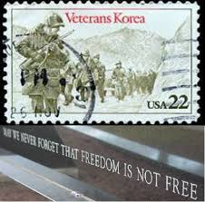 |
| Smithsonian | Collections :: Who provoked the Korean War? | Smithsonian Learning Lab | 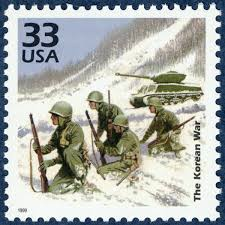 |
| Etsy | 10x KOREAN WAR VETERANS 1985 22cc Unused Vintage Postage Stamp Free Shipping! Your #1 Source With the Best Prices on Vintage Postage Stamps - Etsy Canada | 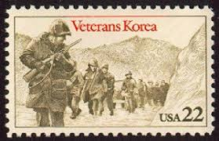 |
| eBay | US 2152 Veterans Korea 22c plate single LR #1 MNH 1985 | eBay | 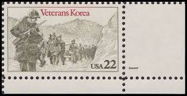 |
| Alamy | NORTH KOREA - CIRCA 1975: a stamp printed in North Korea shows The Guerrilla Base in Spring (1968), Korean Painting, circa 1975 Stock Photo - Alamy | 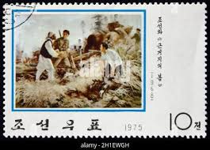 |
| Mystic Stamp Company | 2152 - 1985 22c Korean War Veterans - Mystic Stamp Company | 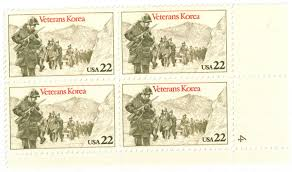 |
| eBay | USA4 #2152 MNH Korean War Veterans | eBay | 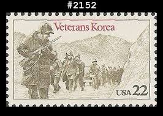 |
| All Numis | 20 Chon 1974 - Combatants, Art - Korea (north) - Stamp - 48917 | 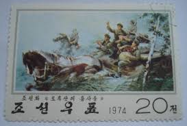 |
| valerosos.com | A Borinqueneer Christmas Carol | 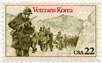 |
| eBay | US POSTAGE STAMP 1985 SCT#2152 #2154 World War 1 Veterans 2PC SET MNH OG | eBay | 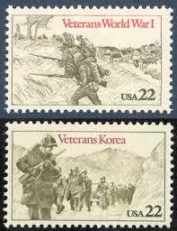 |
| HipStamp | Korea Stamp: 1974-Sc#1267-70 Korean Paintings : A, CTO NH SET. Very Rare | Asia - North Korea, General Issue Stamp / HipStamp | 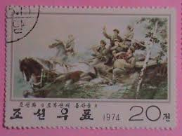 |
| treasurefoxstamps | 33c The Korean War Stamps .. Vintage Unused US Postage Stamps .. Pack of 5 – treasurefoxstamps | 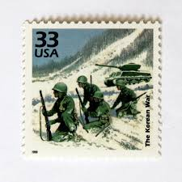 |
| vintagepostagestamps.com | 22¢ Korean War Veterans - Pack of 25 unused stamps from 1985 | Vintage Postage Stamps | 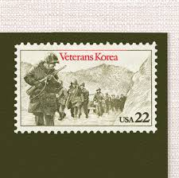 |
| HipStamp | 3187e ** THE KOREAN WAR ** U.S. Postage Stamp MNH | United States, General Issue Stamp / HipStamp | 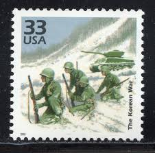 |
| eBay | STAMP US SCOTT 2152 "Veterans Korea-Soldiers Marching" 22 CENT 1985 MNH PBOF4 #3 | eBay | 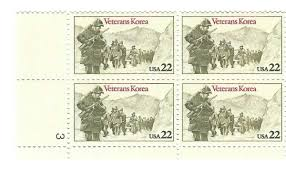 |
| Alamy | North Korean postage stamp from 2003 depicting leader Kim Il-sung in a military vehicle during a Korean War battle scene Stock Photo - Alamy | 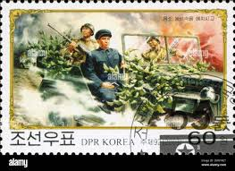 |
| Stamp Community Forum | Honoring Military Service - Stamp Community Forum | 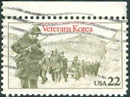 |
| eBay | 1985 22c Korea War Veterans Scott 2152 Mint F/VF NH | eBay | 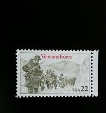 |
| eBay | STAMP US SCOTT 2152 "Veterans Korea-Soldiers Marching" 22 CENT 1985 MNG | eBay | 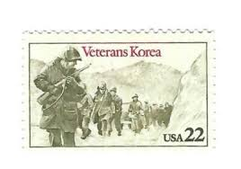 |
| Dreamstime.com | Postage Stamp North Korea 1975. Retaliation Editorial Image - Image of japanese, korea: 210462110 | 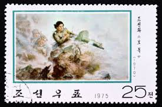 |
| eBay | 2152, Mint NH RARE Misperfed Plate Block 22¢ Veterans Korea Error - Stuart Katz | eBay | 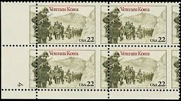 |
| Etsy | 5 the Korean War Stamps, 33 Cent, 1998, 1950s Celebrate the Century, Unused Postage Stamps, Vintage Collectible Stamps - Etsy | 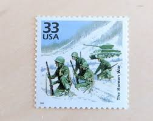 |
| eBay | Kiribati Military & War Postal Stamps for sale | eBay | 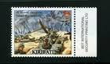 |
| eBay | US Plate Block MNH # 2152 22c Korea Veterans 4 Lr, 7c625 | eBay | 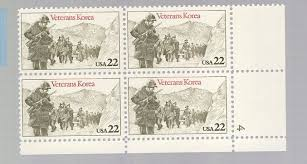 |
| eBay | Marshall Islands 25 Cent Denomination US Possessions Stamps for sale | eBay | 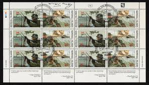 |
| eBay | USA5 #2152 MNH PB4 Korean War Veterans | eBay | 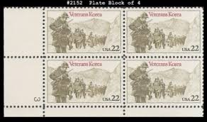 |
| eBay | US Plate Block Stamp Scott# 2152 Korean War Veterans 1985 MNH L725 | eBay | 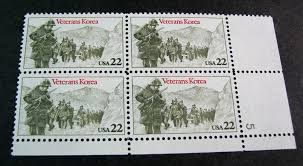 |
| eBay | Scott #2152 22¢ Veterans of Korean War Mint Sheet MNH CV $34.30 | eBay | 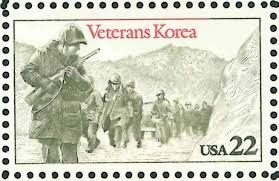 |
| eBay | USA3 #3187e MNH 1950s The Korean War | eBay | 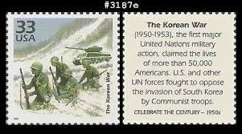 |
| vegas-stamps-hobbies.com | 1985 Veterans Korea Plate Block of 4 22c Postage Stamps - MNH, OG - Sc – Vegas Stamps & Hobbies | 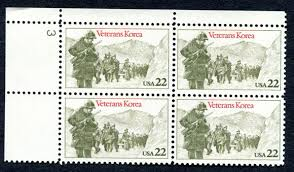 |
| eBay | Vintage 1985 USPS Block of 20 Korea War Veteran Stamps Scott 2152 Mr Zip 22c MNH | eBay | 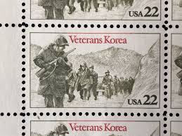 |
| eBay | 1348 for sale | eBay | 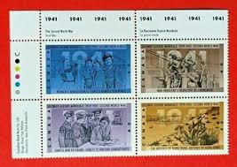 |
| Korea Stamp Society | KSC5177-5180: Renowned Personalities — Korea Stamp Society | 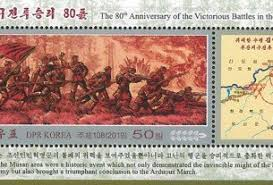 |
| eBay | Scott # 2152 - US Block Of 4 - Korean War Veterans - MNH - 1985 | eBay | 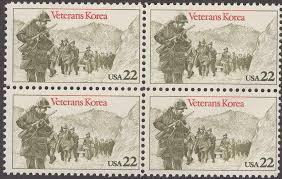 |
| Phila Art | 2020 South Korea The 100th Anniversary of the Victory of the Battle of cheongsanri 1v Stamp - Phila Art | 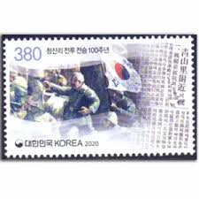 |
| Ubuy Cameroon | KOREAN WAR VETERANS Plate Block of 4 x 22¢ US Cameroon | Ubuy | 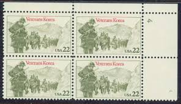 |
| Alamy | NORTH KOREA - CIRCA 1961: A stamp printed in North Korea shows Kim Il Sung - the founder of the DPRK, circa 1961 Stock Photo - Alamy | 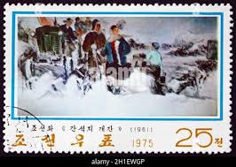 |
| eBay | US 3187e Celebrate the Century 1950s The Korean War 33c single MNH 1999 | eBay | 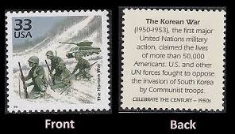 |
| Etsy | 5 the Korean War Stamps, 33 Cent, 1998, 1950s Celebrate the Century, Unused Postage Stamps, Vintage Collectible Stamps - Etsy UK | 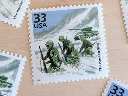 |
| eBay | Q086 Korea 1959 Korean Marines landing 1v. MNH | eBay | 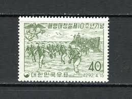 |
| eBay | MNH The Korean War 33 USA Stamp, Celebrate the Century 1950s | eBay | |
| MilitaryConnection.com | Celebrating National Korean War Veterans Armistice Day - Military Connection | |
| eBay | WW2 AMERICAN TROOPS CLEAR SAIPAN BUNKERS 1994 50TH ANNIV MYSTIC CACHET FDC UNADD | eBay | |
| Alamy | North Korean soldiers on tanks parade on Kim Il Sung Square, Saturday, Oct. 10, 2015, in Pyongyang, North Korea. North Korean leader Kim Jong Un declared Saturday that his country was ready | |
| Etsy | This item is unavailable - Etsy | |
| Some of tonight's stamp math : r/StampEmUp | ||
| eBay | USPS press publicity photo for 22c Korean War Veterans stamp Scott 2152 | eBay | |
| eBay | UNITED STATES 2765a-j MNH 2019 SCOTT SPECIALIZED CATALOGUE VALUE $7.50 | eBay | |
| Dreamstime.com | North Korea Stamps No 1 and 2, 40th Anniversary of North Korean Stamps II Serie, Circa 1986 Editorial Photo - Image of hobby, 40th: 108785726 | |
| eBay | KOREA KIM11 SUNG GROUND REAKING OF THE POTONG RIVER | eBay | |
| Shutterstock | 25+ Thousand Soldier Post Royalty-Free Images, Stock Photos & Pictures | Shutterstock |